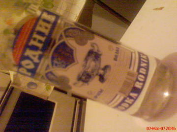
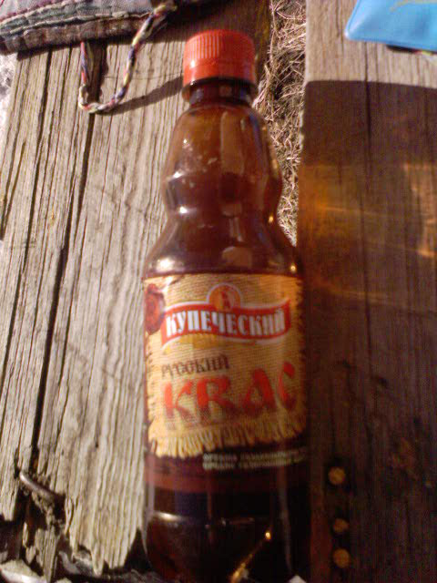

Posts in Japanese

この暑さでやられたのか！！
- 28 March 2007
- Hua Lamphong Station
- Japanese
今日午後２時半ごろ来月タイ南部に行くためにファランﾎﾟーン駅でチケットを買ってました．
キルギスタンで散歩
- 22 March 2007
- kyrgyzstan
- Japanese
これは、標高1500mにあるイシシクル湖(Issyk-kul、kulがキルギスタン語で湖なんですが)の魚の薫製、 ビールのつまにみ最高！
炭酸麦芽系ドリンク、甘くないです。
- 18 February 2007
- Kazakhstan
- Japanese
これも、きっと、ペリエがずーーーーーーーーーーっと、日本であまり飲まれなかったのと同様に、時間がかかるでしょう。
